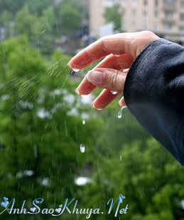

|
Này anh, em thích mưa lắm đấy. Em thích mỗi khi mưa được lang thang ngoài đường, em hứng chí giang tay ra đón mưa, để mưa táp vào mặt ướt đẫm, thấy man mát và dễ chịu. Nhưng em vẫn thích hơn nếu anh đi cũng em mỗi lần mưa như thế. Em sẽ ngồi sau nhí nhố nói cười về triết lý mưa trong khi anh thì nhăn nhó vì mưa to quá. Mình sẽ dừng xe ở đâu đó để trú mưa anh nhé, chờ ngớt mưa lại đi tiếp, nhìn hoàng hôn đang bừng lên cuối chân trời, sau cơn mưa trời lại sáng anh nhỉ. Em ước được cùng anh đi tiếp con đường mưa… Này anh, em thích gió lắm đấy. Ngày gió em thích ngồi ở đâu đó thật rộng và hút gió, ngồi nghĩ miên man, để gió cuốn đi những lo toan trong đầu và em lại ước được bay lên. Nhưng em sẽ thích hơn nếu anh rảnh và đưa em đi dọc đường đê, chỗ đó gió mát lắm, em sẽ không thấy cô đơn vì anh đang ở rất gần. Và nếu anh bận, em chỉ cần một tin nhắn để biết “anh nhớ em, gió gợi nhắc đến em nhiều như là mưa vậy”… Này anh, em thích kem lắm đấy. Kem mát lạnh nhé, tan dìu dịu trên đầu lưỡi rồi rất ngọt ở cổ họng, ăn kem dễ chịu lắm. Em có thể ăn kem cả bốn mùa, kể cả mùa đông rét mướt, em vẫn thích cái vị lành lạnh của kem, lạnh đến tê răng. Nhưng em vẫn thích hơn nếu anh cũng em ăn kem vào mùa đông, lạnh tê mà anh vẫn cố cười rồi đẩy que kem dở cho em, giả vờ bảo thấy em ăn cũng đủ no rồi… Này anh, em thích mùa đông lắm đấy. Mùa đông lạnh ơi là lạnh. Trông em xấu xí trong cái áo bông to sụ, đội cái mũ len màu trắng và quấn khăn thật dày trông như một con gấu bông. Lạnh thế mà vẫn ra đường nhé, ước một chút gió, ước một chút mưa, kiếm một hàng kem ngồi nhâm nhi và nhớ anh, dù chỉ là nhớ những lời ngọt ngào nhẹ như gió thoảng “trông giống gấu thì anh càng yêu, người yêu anh càng to thì anh càng phải yêu nhiều hơn chứ”. Uh, cứ ngọt ngào thế đi và rồi anh chỉ cần lười biếng nằm ngủ ở nhà thôi. Em sẽ đến đánh thức anh bằng một bàn tay lạnh cóng, em sẽ phá giấc ngủ của anh để anh phải nhớ em nhiều hơn những lời ngọt ngào chứ. Này anh, em thích anh lắm đấy. Em thích anh hơn cả mưa, hơn cả gió, hơn cả mùa đông và hơn cả kem nhé. Nhưng hãy để cho em giữ kín điều này cho riêng em, như một bí mật nho nhỏ vậy. Bởi em sợ một ngày anh sẽ biến mất, khi chẳng có gì là mãi mãi trong cuộc đời này thì hãy cho em một bí mật nho nhỏ để em tin anh đang đứng chờ em ở cuối con đường mưa em đang đi Nguồn: ASK sưu tầm || Tham gia bình luận TẠI ĐÂY ||
Bạn vô tình đọc ở đâu đó một câu chuyện tình cảm động hoặc một câu chuyện do chính bạn viết ra. Hãy đến với chúng tôi để cùng nhau chia sẻ: wWw.anhsaokhuya.net
Chung tay vì một thế giới online lành mạnh !
|